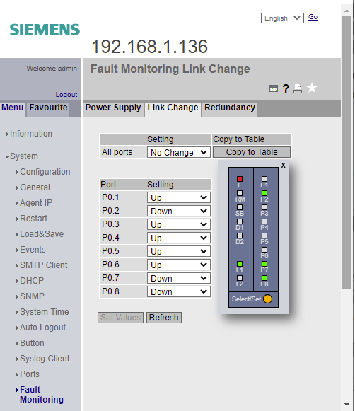
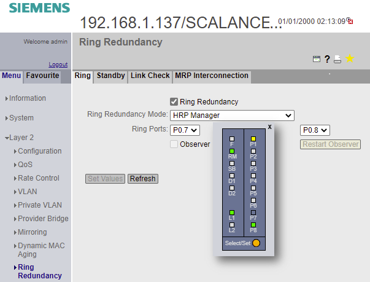
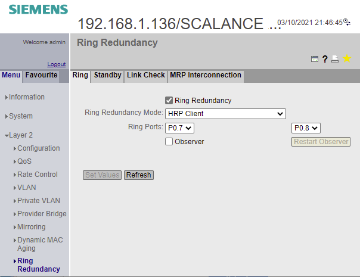
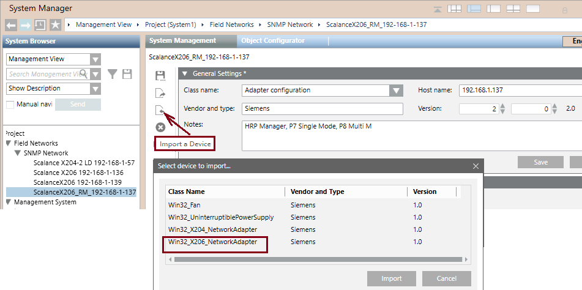
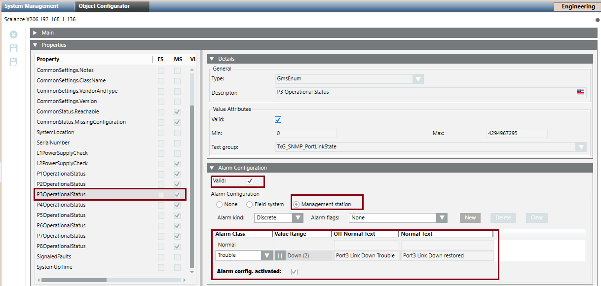
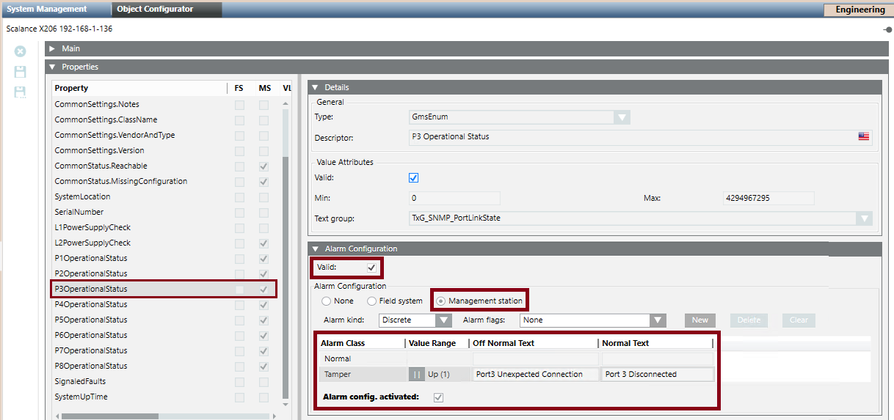
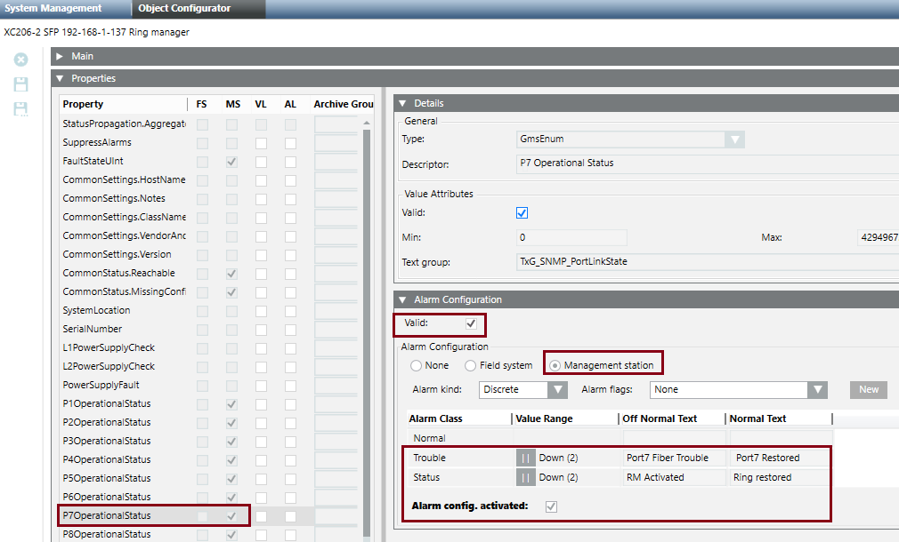
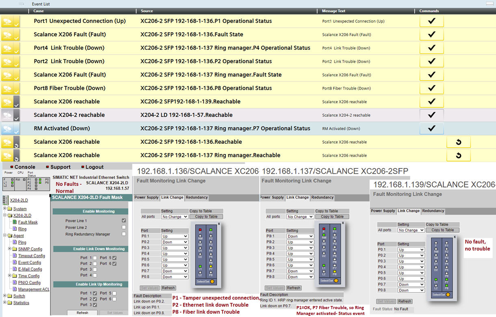

Scalance XC206-2SFP Ethernet Switch
Scalance X206-2SFP Installation and Setup Guidelines
Install and setup the Scalance XC206-2SFP switch unit following the instructions provided in the related documentation.
You can easily program the switch settings over a Web browser (Web-based Management) once an Ethernet connection to the switch is established.
This section does not cover the entire setting procedure; it only illustrates the steps required to enable, if needed:
- Supervision for the redundant power supply.
- Supervision for the Ethernet ports 1-6.
- Redundant ring monitoring on fiber optic ports 7 and 8 (Class X) and Redundancy Manager monitoring.
In the Scalance Switch WEB interface, the following two pages are involved:
- In the System menu, the Fault Monitoring page, to monitor various conditions and generate a trouble event.
- In the Layer 2 menu, the Ring Redundancy page, to enable the redundancy on the fiber optic lines, specify the ring redundancy mode (manager or client) for each switch, and set the ring ports.
These configuration pages are briefly described in the following sections, along with the SNMP and event configuration at Desigo CC level, which can provide additional diagnostics information.
Set up the Scalance X206-2SFP Fault Monitoring
In the Fault Monitoring page, illustrated below, you can set the conditions to monitor for the fault summary.
The fault summary is represented in the web page by the F LED in the LED panel.
A Trouble appears in the Event List of Desigo CC as a Scalance X206 Fault State (see the Ring Monitoring Example below).
The list of monitored conditions includes:
- In the Power Supply tab, the power supply lines 1 and 2 (L1 and L2 in the LED panel).
- In the Link Change tab, the connected ports (Down condition) from P0.1 to P0.8 (P1-P8 in the LED panel).
- In the Redundancy tab, the Redundancy Lost in HPR mode.

Set up the Scalance X206-2SFP Ring Redundancy
In the Ring Redundancy page, in the Ring tab, you can set the Ring Redundancy Mode (see to the Scalance documentation) and the two Ring Ports, as illustrated in the images below.


Configure the SNMP Device for the XC206-2SFP Switch
This is a required step for the XC206-2SFP diagnostic events at Desigo CC level.
- You created the SNMP driver and network.
See Configuring the SNMP Connectivity.
- In the SNMP network, add a new XC206-2SFP device.
- Import the Win32_X206_NetworkAdapter template, which is provided in the list of predefined devices.
See the image below and refer to Importing an SNMP Device Configuration. - In Host Name, enter the IP address of the XC206-2SFP switch
- (Optional) Fill out the Version fields for your own reference information.

Configure the Line Trouble and Line Tamper Events in Desigo CC
You can configure Desigo CC to generate an event when a XC206-2SFP line changes its connection status.
This allows to get a trouble and tamper event for each of the individual switch line from 1 to 6.
In fact, you can configure both a trouble event when a used connection is down and a tamper event when an unused connection is up.
To do that, refer to the images below and proceed as follows:
- System Manager is in Engineering mode.
- System Browser is in Management View.
- In the SNMP network, you configured the XC206-2SFP switch.
- Select Field Networks > SNMP > [XC206-2SFP switch].
- In the Object Configurator tab, close the Main expander and expand the Properties expander.
- Select the PxOperationalStatus property, with x being the number of the line you want to monitor, ranging from 1 to 6.
- In the Alarm Configuration expander, on the right-hand side of the pane, click Valid and select Management Station.
- In Alarm Class, select Trouble for the Down value of an active line, or Tamper for the Up value of an inactive line.
- In Off Normal Text, enter, for example,
Port-3 Link Down. - In Normal Text, enter, for example,
Port-3 Link Normal. - Make sure the Alarm config.activated check box is selected.
- Click Save
 .
.
- The system is now configured to generate the selected event when the switch line changes status.


Configure the Ring Trouble and Redundancy Manager Status Events in Desigo CC
Optionally, you can configure Desigo CC to monitor the ring status on lines 7 and 8 in HRP mode.
This allows to get a trouble event when a line is down and a status event when the Redundancy Manager (RM) activates to manage a network problem.
To configure this, refer to the images below and proceed as follows:
- System Manager is in Engineering mode.
- System Browser is in Management View.
- Select Field Networks > SNMP > [XC206-2SFP switch].
- In the Object Configurator tab, close the Main expander and expand the Properties expander.
- Select the P7OperationalStatus property.
- In the Alarm Configuration expander, on the right-hand side of the pane, click Valid and select Management Station.
- In Alarm Class, select Trouble for the Down value.
- In Off Normal Text, enter
P7 Fiber Optic Down. - In Normal Text, enter
P7 Fiber Optic Restored. - Make sure the Alarm config.activated check box is selected.
- Click Save .
- Next to the Alarm flags field, click New.
- A new alarm line displays.
- In the new alarm line, in Alarm Class, select Status for the Down value.
- In Off Normal Text, enter
RM Activated. - In Normal Text, enter
RM Normal. - Make sure the Alarm config.activated check box is selected.
- Click Save .
- Repeat the steps above for the P8OperationalStatus property. Use “P8” in the event texts instead of “P7”.
- The system is now configured to generate the selected events when the ring lines go down or the RM activates.

Ring Monitoring Example
The following image illustrates the Desigo CC Event List in a fault situation on a multiple-switch ring. The following events are reported on the Scalance unit identified by their IP address:
- 192.168.1.136 Port 2 Tamper (Up) fault due to an unexpected computer connected.
- 192.168.1.139 Scalance X206 Fault and P7 Link Down due to a line down to next unit (.137 P8).
- 192.168.1.137 Scalance X206 Fault and RM Activated due to ring open on P8.
